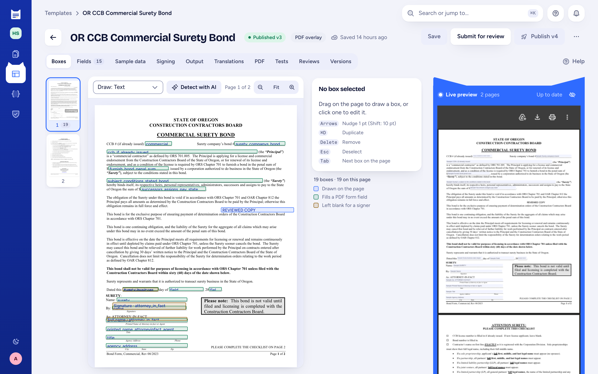
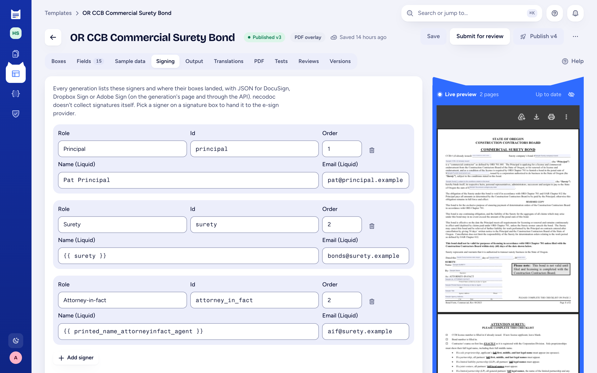

01 Surety bonds
Bonds on the obligee's own form.
Municipalities, provinces and states publish their own bond forms and expect them back unchanged. necodoc fills the form they published.
- How
- Upload the obligee's PDF, place or import fields, publish. Each signer (principal, surety, attorney-in-fact) gets a box and a place in the routing order.
- Signing
- Every generation carries a signing package for DocuSign, Dropbox Sign or Acrobat Sign. Your provider runs the signature.
- Limit
- Pure XFA forms and forms that need a password to open aren't supported.
Example: Oregon CCB commercial surety bond, fictional principal

